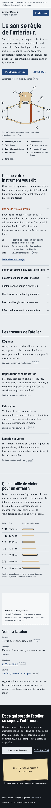
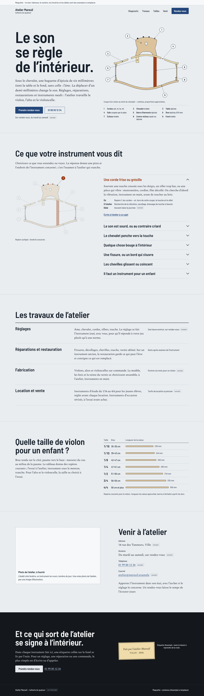

Planche de regard
Défaut dominant restant : Le dessin du chevalet est lourd, et les bords de la table se lisent comme deux ailes séparées ; l’emplacement photo reste vide
Ce qui a déjà été essayé
- Titre recoupé selon le sens à 1440 px (« Le son / se règle / de l’intérieur. »)
- Travaux passés de quatre blocs égaux à un registre en lignes
- Focus rendu visible sur le fond ébène ; liens « Écrire » portés à 44 px
Questions
- Le site vous paraît-il être celui d’un luthier, ou pourrait-il appartenir à un autre atelier ?
- La coupe dessinée tient-elle la première scène, ou faut-il l’affiner (chevalet, table, proportions) ?
- Quel détail n’est pas au niveau de l’idée (alignement, rythme, raccord, matière) ?

